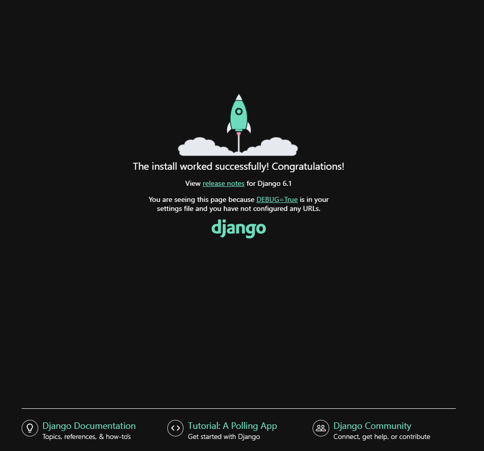
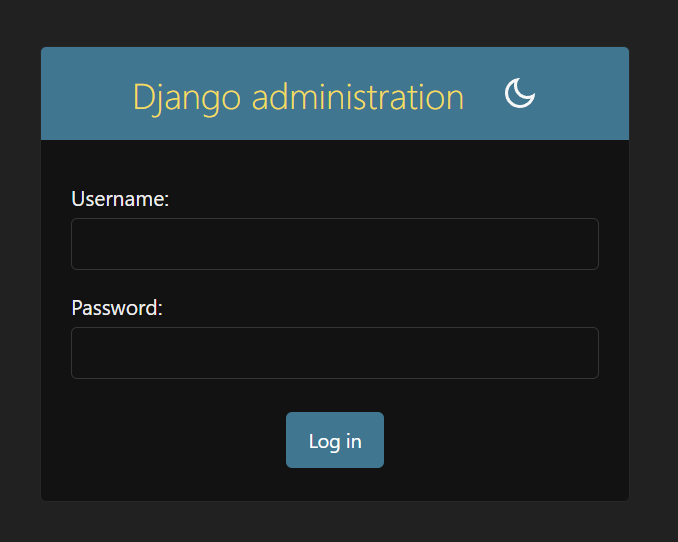
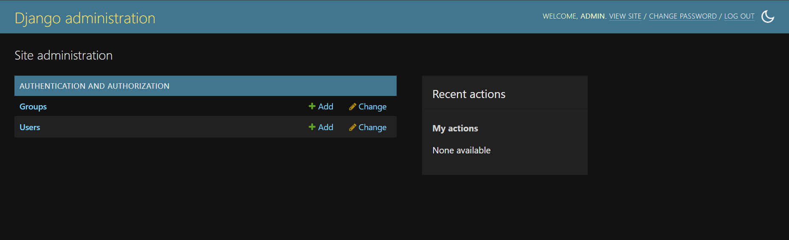
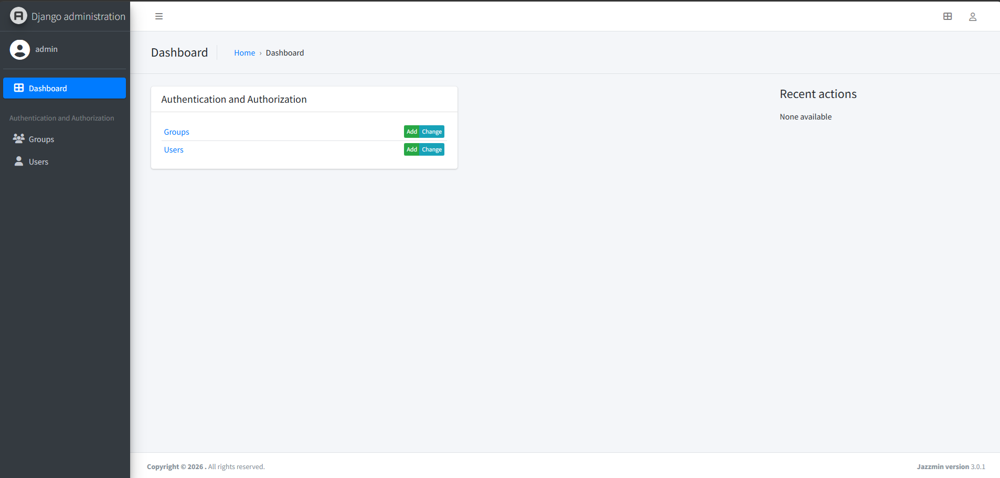
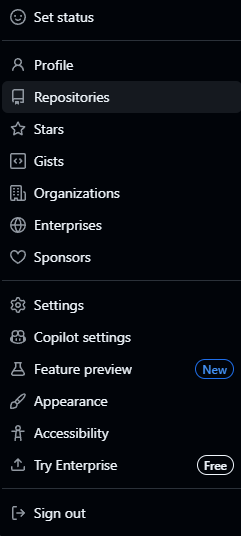
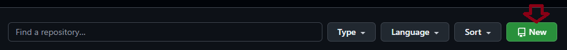
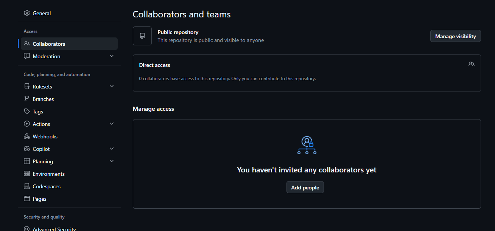

Parte I
Preparação do Ambiente
1
Passo 1
Criar a pasta do projeto
Passo 1
Criar a pasta do projeto
- Abra o Explorador de Arquivos (Win + E).
- Crie uma nova pasta.
- Dê um nome e pressione Enter.
2
Passo 2
Criar o ambiente virtual
Passo 2
Criar o ambiente virtual
- Abra o terminal dentro da pasta do projeto.
- Execute o comando:
> python -m venv .venv
3
Passo 3
Ativar o ambiente virtual
Passo 3
Ativar o ambiente virtual
A Automático, VS Code
A extensão Python ativa a .venv sozinha ao abrir um novo terminal.
B Manual
> .venv\Scripts\Activate.ps1> .venv\Scripts\activate! Erro de permissão no PowerShell?
Ajuste a política de execução do Windows:
> Set-ExecutionPolicy -Scope Process -ExecutionPolicy RemoteSigned> Set-ExecutionPolicy -Scope CurrentUser -ExecutionPolicy RemoteSigned> .venv\Scripts\activate.bat
4
Passo 4
Instalar as bibliotecas
Passo 4
Instalar as bibliotecas
Com a (.venv) ativa, execute:
> python.exe -m pip install --upgrade pip
> pip install django
> pip install django-jazzmin==3.0.1✓ Verificar a instalação
# Versão do Python
> python --version
# Versão do Django
> django-admin --version
# Versão do Jazzmin
> pip show django-jazzmin
# Todas as bibliotecas instaladas
> pip listParte II
Criação do Projeto
5
Passo 5
Iniciar o projeto
Passo 5
Iniciar o projeto
> django-admin startproject app .✓ Estrutura gerada
meu_projeto/
├── .venv/
├── app/
│ ├── __init__.py
│ ├── asgi.py
│ ├── settings.py
│ ├── urls.py
│ └── wsgi.py
└── manage.py
6
Passo 6
Rodar o servidor
Passo 6
Rodar o servidor
Com a (.venv) ativa, execute:
> python manage.py runserver- Acesse
http://127.0.0.1:8000no navegador. - Para parar o servidor: Ctrl + C
✓ Resultado esperado


/admin
7
Passo 7
Primeira migração
Passo 7
Primeira migração
Ao rodar o servidor, o terminal exibe este aviso:
You have 18 unapplied migration(s). Your project may not work properly until you apply the migrations for app(s): admin, auth, contenttypes, sessions.
Run 'python manage.py migrate' to apply them.
September 29, 2026 - 08:25:53
Django version 6.1.1, using settings 'app.settings'
Starting WSGI development server at http://127.0.0.1:8000/
Quit the server with CTRL-BREAK.- Pare o servidor: Ctrl + C
- Aplique as migrações padrão do Django:
> python manage.py migrate
8
Passo 8
Criar o superusuário
Passo 8
Criar o superusuário
> python manage.py createsuperuser
Username (leave blank to use 'andrey'): admin
Email address: admin@admin.br
Password: # nada aparece ao digitar
Password (again): # nada aparece ao digitar
The password is too similar to the email address.
Bypass password validation and create user anyway? [y/N]: y
Superuser created successfully.- Username: nome de acesso.
- Email: precisa ter formato de e-mail, com
@e terminando em.comou.br. - Password: senha e confirmação.
✓ Primeiro login
- Rode o servidor:
python manage.py runserver - Acesse
http://127.0.0.1:8000/admine entre com o usuário criado.

+
Extra
Ajustando o Jazzmin
Extra
Ajustando o Jazzmin
1 Registrar o app
No arquivo app/settings.py, adicione 'jazzmin' no topo do INSTALLED_APPS:
INSTALLED_APPS = [
'jazzmin',
'django.contrib.admin',
'django.contrib.auth',
'django.contrib.contenttypes',
'django.contrib.sessions',
'django.contrib.messages',
'django.contrib.staticfiles',
]
2 Configurações do Jazzmin
No final do app/settings.py, adicione:
JAZZMIN_SETTINGS = {
# title of the window (Will default to current_admin_site.site_title if absent or None)
"site_title": "Library Admin",
# Title on the login screen (19 chars max) (defaults to current_admin_site.site_header if absent or None)
"site_header": "Library",
# Title on the brand (19 chars max) (defaults to current_admin_site.site_header if absent or None)
"site_brand": "Library",
# Logo to use for your site, must be present in static files, used for brand on top left
"site_logo": "books/img/logo.png",
# Logo to use for your site, must be present in static files, used for login form logo (defaults to site_logo)
"login_logo": None,
# Logo to use for login form in dark themes (defaults to login_logo)
"login_logo_dark": None,
# CSS classes that are applied to the logo above
"site_logo_classes": "img-circle",
# Relative path to a favicon for your site, will default to site_logo if absent (ideally 32x32 px)
"site_icon": None,
# Welcome text on the login screen
"welcome_sign": "Welcome to the library",
# Copyright on the footer
"copyright": "Acme Library Ltd",
# List of model admins to search from the search bar, search bar omitted if excluded
# If you want to use a single search field you dont need to use a list, you can use a simple string
"search_model": ["auth.User", "auth.Group"],
# Field name on user model that contains avatar ImageField/URLField/Charfield or a callable that receives the user
"user_avatar": None,
############
# Top Menu #
############
# Links to put along the top menu
"topmenu_links": [
# Url that gets reversed (Permissions can be added)
{"name": "Home", "url": "admin:index", "permissions": ["auth.view_user"]},
# external url that opens in a new window (Permissions can be added)
{"name": "Support", "url": "https://github.com/farridav/django-jazzmin/issues", "new_window": True},
# model admin to link to (Permissions checked against model)
{"model": "auth.User"},
# App with dropdown menu to all its models pages (Permissions checked against models)
{"app": "books"},
],
#############
# User Menu #
#############
# Additional links to include in the user menu on the top right ("app" url type is not allowed)
"usermenu_links": [
{"name": "Support", "url": "https://github.com/farridav/django-jazzmin/issues", "new_window": True},
{"model": "auth.user"}
],
#############
# Side Menu #
#############
# Whether to display the side menu
"show_sidebar": True,
# Whether to aut expand the menu
"navigation_expanded": True,
# Hide these apps when generating side menu e.g (auth)
"hide_apps": [],
# Hide these models when generating side menu (e.g auth.user)
"hide_models": [],
# List of apps (and/or models) to base side menu ordering off of (does not need to contain all apps/models)
"order_with_respect_to": ["auth", "books", "books.author", "books.book"],
# Custom links to append to app groups, keyed on app name
"custom_links": {
"books": [{
"name": "Make Messages",
"url": "make_messages",
"icon": "fas fa-comments",
"permissions": ["books.view_book"]
}]
},
# Custom icons for side menu apps/models See https://fontawesome.com/icons?d=gallery&m=free&v=5.0.0,5.0.1,5.0.10,5.0.11,5.0.12,5.0.13,5.0.2,5.0.3,5.0.4,5.0.5,5.0.6,5.0.7,5.0.8,5.0.9,5.1.0,5.1.1,5.2.0,5.3.0,5.3.1,5.4.0,5.4.1,5.4.2,5.13.0,5.12.0,5.11.2,5.11.1,5.10.0,5.9.0,5.8.2,5.8.1,5.7.2,5.7.1,5.7.0,5.6.3,5.5.0,5.4.2
# for the full list of 5.13.0 free icon classes
"icons": {
"auth": "fas fa-users-cog",
"auth.user": "fas fa-user",
"auth.Group": "fas fa-users",
},
# Icons that are used when one is not manually specified
"default_icon_parents": "fas fa-chevron-circle-right",
"default_icon_children": "fas fa-circle",
#################
# Related Modal #
#################
# Use modals instead of popups
"related_modal_active": False,
#############
# UI Tweaks #
#############
# Relative paths to custom CSS/JS scripts (must be present in static files)
"custom_css": None,
"custom_js": None,
# Whether to link font from fonts.googleapis.com (use custom_css to supply font otherwise)
"use_google_fonts_cdn": True,
# Whether to show the UI customizer on the sidebar
"show_ui_builder": True,
###############
# Change view #
###############
# Render out the change view as a single form, or in tabs, current options are
# - single
# - horizontal_tabs (default)
# - vertical_tabs
# - collapsible
# - carousel
"changeform_format": "horizontal_tabs",
# override change forms on a per modeladmin basis
"changeform_format_overrides": {"auth.user": "collapsible", "auth.group": "vertical_tabs"},
# Add a language dropdown into the admin
"language_chooser": False,
}Parte III
Versionamento com Git
9
Passo 9
Instalar o Git
Passo 9
Instalar o Git
- Baixe o instalador em git-scm.com/install/windows
- Instale com as opções padrão.
✓ Verificar a instalação
> git --version
10
Passo 10
Criar o repositório no GitHub
Passo 10
Criar o repositório no GitHub
- No GitHub, clique na sua foto (canto superior direito) e vá em Repositories.

- Clique em New.

- Preencha o Repository name * (campo obrigatório).
+ Adicionar colaboradores (opcional)
Para outra pessoa enviar alterações (git push) ao repositório, ela precisa ser colaboradora. No repositório, vá em Settings → Collaborators e clique em Add people.

11
Passo 11
Criar o .gitignore
Passo 11
Criar o .gitignore
Lista os arquivos que o Git não deve enviar. Na pasta do projeto:
> ni .gitignoreAbra o arquivo e cole:
# Ambiente virtual
.venv/
# Cache do Python
__pycache__/
*.pyc
# Banco de dados local
db.sqlite3
db.sqlite3-journal
# Variáveis de ambiente (senhas, chaves)
.env
# Arquivos gerados pelo Django
media/
staticfiles/
# Logs
*.log
# Editores
.vscode/
.idea/
12
Passo 12
Iniciar o Git no projeto
Passo 12
Iniciar o Git no projeto
Na pasta do projeto, execute:
> git init
Initialized empty Git repository in C:/.../meu_projeto/.git/
13
Passo 13
Primeiro commit e envio
Passo 13
Primeiro commit e envio
# Adiciona todos os arquivos
> git add .
# Cria e adiciona o README
> ni README.md
> git add README.md
# Salva a versão
> git commit -m "first commit"
# Renomeia a branch para main
> git branch -M main
# Conecta ao repositório do GitHub
> git remote add origin https://github.com/seurepositorio
# Envia para o GitHub
> git push -u origin main
14
Passo 14
Salvar alterações no dia a dia
Passo 14
Salvar alterações no dia a dia
Sempre que alterar o projeto:
# Confere em qual branch está (marcada com *)
> git branch
# Salva e envia
> git add .
> git commit -m "descreva a alteração"
> git push
15
Passo 15
Clonar em outro computador
Passo 15
Clonar em outro computador
# Baixa o projeto
> git clone https://github.com/seurepositorio
> cd seurepositorio
# Busca as branches do GitHub
> git fetch origin
# Lista as branches
> git branch -a
# Muda para uma branch
> git switch nome-da-branch
# Atualiza com a última versão
> git pullParte IV
Criando um App
16
Passo 16
Criar o seu app
Passo 16
Criar o seu app
Um app é uma parte do projeto com uma função específica (cursos, usuários, pagamentos...). Um projeto pode ter vários apps.
> python manage.py startapp nome_do_seu_app✓ Estrutura gerada
meu_projeto/
├── app/
├── nome_do_seu_app/
│ ├── migrations/
│ │ └── __init__.py
│ ├── __init__.py
│ ├── admin.py
│ ├── apps.py
│ ├── models.py
│ ├── tests.py
│ └── views.py
└── manage.py? O que é cada arquivo
models.py- Tabelas do banco de dados, escritas como classes Python.
views.py- Lógica das páginas, recebe a requisição e devolve a resposta.
admin.py- Registra os models para aparecerem no painel
/admin. apps.py- Configuração do app (nome, rótulo).
tests.py- Testes automatizados do app.
migrations/- Histórico das alterações no banco, gerado pelo
makemigrations. __init__.py- Indica ao Python que a pasta é um pacote. Fica vazio.
Parte V
Models
17
Passo 17
Criar os models
Passo 17
Criar os models
Cada model é uma classe Python que vira uma tabela no banco. Cada atributo vira uma coluna.
from django.db import models
class Person(models.Model):
first_name = models.CharField(verbose_name="Nome", max_length=30)
last_name = models.CharField(verbose_name="Sobrenome", max_length=30)
class Meta:
verbose_name = "Pessoa"
verbose_name_plural = "Pessoas"
ordering = ["first_name"]
def __str__(self):
return f"{self.first_name} {self.last_name}"
class Course(models.Model):
PERIOD_CHOICES = [
("M", "Matutino"),
("V", "Vespertino"),
("N", "Noturno"),
]
name = models.CharField(verbose_name="Nome do curso", max_length=100)
description = models.TextField(verbose_name="Descrição", blank=True)
workload = models.PositiveIntegerField(verbose_name="Carga horária (h)", default=0)
period = models.CharField(
verbose_name="Período",
max_length=1,
choices=PERIOD_CHOICES,
default="M",
)
teacher = models.ForeignKey(
Person,
on_delete=models.CASCADE,
verbose_name="Professor",
)
class Meta:
verbose_name = "Curso"
verbose_name_plural = "Cursos"
ordering = ["name"]
def __str__(self):
return self.name? Entendendo o código
Person- Exemplo da documentação oficial do Django.
CharField- Texto curto, exige
max_length. TextField- Texto longo.
blank=Truedeixa o campo opcional. PositiveIntegerField- Número inteiro, sem negativos.
default=0define o valor inicial. Outros:IntegerField,DecimalField(valores com casas decimais, ex.: preço). choices- Limita o campo a uma lista de opções. No admin vira um menu de seleção.
ForeignKey- Chave estrangeira, liga cada curso a uma pessoa (o professor).
on_deleteCASCADEapaga os cursos se a pessoa for apagada.verbose_name(no campo)- Rótulo do campo exibido no admin e nos formulários, ex.:
verbose_name="Nome". class Meta- Configurações do model, não viram coluna.
verbose_name- Nome do model no singular, exibido no admin.
verbose_name_plural- Nome no plural. Sem ele o Django só adiciona "s", o que erra em palavras como "Professor" (viraria "Professors").
ordering- Ordem padrão das listagens. Use
"-name"para ordem decrescente. __str__- Texto exibido no admin no lugar de
Person object (1).
≡ Como funciona o choices
Cada opção é um par (valor no banco, texto na tela):
| Grava no banco | Aparece na tela |
|---|---|
M | Matutino |
V | Vespertino |
N | Noturno |
Para mostrar o texto em vez da letra, o Django cria o método get_period_display():
course.period # "M"
course.get_period_display() # "Matutino"
18
Passo 18
Enviar os models para o banco
Passo 18
Enviar os models para o banco
1 Registrar o app
Se ainda não fez, adicione o app no final do INSTALLED_APPS:
INSTALLED_APPS = [
'jazzmin',
'django.contrib.admin',
...
'django.contrib.staticfiles',
'nome_do_seu_app',
]2 Verificar o projeto
> python manage.py check
System check identified no issues (0 silenced).3 Gerar a migração
> python manage.py makemigrations
Migrations for 'nome_do_seu_app':
nome_do_seu_app\migrations\0001_initial.py
+ Create model Person
+ Create model Course4 Aplicar no banco
> python manage.py migrate
Applying nome_do_seu_app.0001_initial... OKcheck- Procura erros no projeto (models, settings) sem alterar nada.
makemigrations- Lê o
models.pye gera o arquivo de migração. migrate- Executa a migração e cria as tabelas no
db.sqlite3.
Parte VI
Painel Admin
19
Passo 19
Registrar os models no admin
Passo 19
Registrar os models no admin
Para os models aparecerem no /admin, registre-os no admin.py do app:
from django.contrib import admin
from nome_do_seu_app.models import Person, Course
class PersonAdmin(admin.ModelAdmin):
list_display = ("first_name", "last_name")
search_fields = ("first_name", "last_name")
class CourseAdmin(admin.ModelAdmin):
list_display = ("name", "teacher", "workload", "period")
search_fields = ("name",)
list_filter = ("teacher", "period")
admin.site.register(Person, PersonAdmin)
admin.site.register(Course, CourseAdmin)? Entendendo o código
ModelAdmin- Classe que configura como o model aparece no admin.
list_display- Colunas exibidas na listagem.
search_fields- Campos usados na barra de busca.
list_filter- Filtros na lateral da listagem.
admin.site.register- Liga o model à sua configuração no admin.
Parte VII
Views e Templates
20
Passo 20
Criar as pastas templates e static
Passo 20
Criar as pastas templates e static
O template é o HTML da página. Os arquivos static são CSS, JavaScript e imagens. Crie as pastas assim:
meu_projeto/
├── app/
├── nome_do_seu_app/
│ ├── migrations/
│ ├── static/
│ │ └── nome_do_seu_app/
│ │ └── css/
│ │ └── style.css
│ ├── templates/
│ │ └── nome_do_seu_app/
│ │ └── person_list.html
│ ├── urls.py
│ ├── models.py
│ └── views.py
└── manage.pynome_do_seu_app/templates/nome_do_seu_app/- Templates do app. O Django encontra essa pasta sozinho (
APP_DIRS = True). nome_do_seu_app/static/nome_do_seu_app/- CSS, JS e imagens do app. Também é encontrada sozinha, sem configurar nada.
urls.py- Rotas do app. O
startappnão cria, crie o arquivo vazio.
✓ Conferir o static
O settings.py já vem com a linha abaixo, não precisa mudar:
STATIC_URL = 'static/'
21
Passo 21
Criar a ListView
Passo 21
Criar a ListView
A ListView é uma view genérica do Django: busca os registros do model e entrega para o template, sem precisar escrever a consulta.
1 A view
from django.views.generic import ListView
from nome_do_seu_app.models import Person
class PersonListView(ListView):
model = Person
template_name = "nome_do_seu_app/person_list.html"
context_object_name = "people"
paginate_by = 10model- Model listado. A view faz
Person.objects.all(), respeitando oorderingdoMeta. template_name- Template usado. Opcional, o padrão já é
nome_do_seu_app/person_list.html, mas deixar escrito fica mais claro. context_object_name- Nome da lista no template. Sem ele, use
person_listouobject_list. paginate_by- Quantos registros por página. Opcional.
2 As rotas do app
from django.urls import path
from nome_do_seu_app.views import PersonListView
app_name = "nome_do_seu_app"
urlpatterns = [
path("pessoas/", PersonListView.as_view(), name="person_list"),
]3 Incluir no projeto
from django.contrib import admin
from django.urls import path, include
urlpatterns = [
path('admin/', admin.site.urls),
path('', include('nome_do_seu_app.urls')),
]as_view()- Transforma a classe em uma view que o
pathentende. Sempre necessário em views de classe. name- Apelido da rota, usado nos links:
{% url 'nome_do_seu_app:person_list' %}. app_name- Namespace do app, evita conflito se outro app tiver uma rota com o mesmo
name. include- Liga as rotas do app às rotas do projeto.
22
Passo 22
Criar o template da lista
Passo 22
Criar o template da lista
1 A página da lista
{% load static %}
<!DOCTYPE html>
<html lang="pt-br">
<head>
<meta charset="UTF-8">
<meta name="viewport" content="width=device-width, initial-scale=1.0">
<title>Pessoas</title>
<link rel="stylesheet" href="{% static 'nome_do_seu_app/css/style.css' %}">
</head>
<body>
<h1>Pessoas</h1>
<ul>
{% for person in people %}
<li>{{ person.first_name }} {{ person.last_name }}</li>
{% empty %}
<li>Nenhuma pessoa cadastrada.</li>
{% endfor %}
</ul>
{% if is_paginated %}
<nav>
{% if page_obj.has_previous %}
<a href="{% querystring page=page_obj.previous_page_number %}">Anterior</a>
{% endif %}
<span>Página {{ page_obj.number }} de {{ page_obj.paginator.num_pages }}</span>
{% if page_obj.has_next %}
<a href="{% querystring page=page_obj.next_page_number %}">Próxima</a>
{% endif %}
</nav>
{% endif %}
</body>
</html>2 O CSS
body {
font-family: system-ui, sans-serif;
max-width: 720px;
margin: 40px auto;
padding: 0 16px;
}? Entendendo o código
{% load static %}- Libera a tag
{% static %}. Precisa estar em cada template que a usa. {% static '...' %}- Monta o caminho do arquivo, ex.:
/static/nome_do_seu_app/css/style.css. {{ ... }}- Exibe um valor.
{% ... %}executa uma lógica (for, if). {% empty %}- Mostrado quando a lista está vazia.
page_obj- Criado pelo
paginate_by, controla a navegação entre páginas. {% querystring %}- Monta o link da página (
?page=2) mantendo os outros parâmetros da URL, como uma busca. Disponível a partir do Django 5.1.
✓ Resultado esperado
> python manage.py runserverAcesse http://127.0.0.1:8000/pessoas/ e veja as pessoas cadastradas no admin.
Parte VIII
Formulários
23
Passo 23
Criar o ModelForm
Passo 23
Criar o ModelForm
O ModelForm cria um formulário a partir do model: os campos, rótulos e validações vêm prontos. Crie o arquivo forms.py dentro do app:
from django import forms
from nome_do_seu_app.models import Person
class PersonForm(forms.ModelForm):
class Meta:
model = Person
fields = ["first_name", "last_name"]forms.ModelForm- Formulário ligado a um model. Salvar o formulário grava no banco.
model- Model usado para montar o formulário.
fields- Campos exibidos no formulário. Os rótulos vêm do
verbose_namede cada campo.
24
Passo 24
Criar a UpdateView
Passo 24
Criar a UpdateView
A UpdateView é a view genérica de edição: busca o registro pelo pk da URL, preenche o formulário e salva as alterações.
1 A view
from django.contrib.auth.mixins import LoginRequiredMixin
from django.urls import reverse_lazy
from django.views.generic import ListView, UpdateView
from nome_do_seu_app.forms import PersonForm
from nome_do_seu_app.models import Person
class PersonListView(ListView):
...
class PersonUpdateView(LoginRequiredMixin, UpdateView):
model = Person
form_class = PersonForm
template_name = "nome_do_seu_app/person_form.html"
context_object_name = "person"
# fields = ["first_name", "last_name"]
success_url = reverse_lazy("nome_do_seu_app:person_list")
login_url = reverse_lazy("admin:login")LoginRequiredMixin- Só deixa entrar quem está logado. Precisa vir antes da
UpdateViewna lista de classes. form_class- Formulário usado, o
PersonFormdo passo anterior. fields(comentado)- Alternativa sem
forms.py: o Django monta o formulário sozinho. Useform_classoufields, nunca os dois, senão dá erro. context_object_name- Nome do registro no template:
{{ person }}. O formulário fica em{{ form }}. success_url- Para onde ir depois de salvar, aqui a lista de pessoas.
login_url- Para onde mandar quem não está logado. Usamos a tela de login do admin, que depois volta para a página pedida.
reverse_lazy- Transforma o
nameda rota em URL. É "lazy" porque as rotas ainda não existem quando a classe é lida.
2 A rota
from django.urls import path
from nome_do_seu_app.views import PersonListView, PersonUpdateView
app_name = "nome_do_seu_app"
urlpatterns = [
path("pessoas/", PersonListView.as_view(), name="person_list"),
path("pessoas/<int:pk>/editar/", PersonUpdateView.as_view(), name="person_update"),
]<int:pk>- Parte variável da URL: o id da pessoa. Em
/pessoas/3/editar/a view edita a pessoa de id 3.
25
Passo 25
Criar o template do formulário
Passo 25
Criar o template do formulário
1 A página do formulário
{% load static %}
<!DOCTYPE html>
<html lang="pt-br">
<head>
<meta charset="UTF-8">
<meta name="viewport" content="width=device-width, initial-scale=1.0">
<title>Editar pessoa</title>
<link rel="stylesheet" href="{% static 'nome_do_seu_app/css/style.css' %}">
</head>
<body>
<h1>Editar {{ person }}</h1>
<form method="post">
{% csrf_token %}
{{ form.as_p }}
<button type="submit">Salvar</button>
<a href="{% url 'nome_do_seu_app:person_list' %}">Cancelar</a>
</form>
</body>
</html>2 Link de edição na lista
No person_list.html do passo 22, adicione um link em cada pessoa:
{% for person in people %}
<li>
{{ person.first_name }} {{ person.last_name }}
<a href="{% url 'nome_do_seu_app:person_update' person.pk %}">Editar</a>
</li>
{% empty %}
<li>Nenhuma pessoa cadastrada.</li>
{% endfor %}? Entendendo o código
method="post"- Envia os dados para a mesma URL. A
UpdateViewvalida, salva e redireciona para osuccess_url. {% csrf_token %}- Proteção contra envios falsos de outros sites. Obrigatório em todo formulário
post, sem ele o Django responde 403. {{ form.as_p }}- Desenha cada campo dentro de um
<p>, com rótulo e mensagens de erro. {% url '...' person.pk %}- Monta a URL da rota passando o id, ex.:
/pessoas/3/editar/.
✓ Resultado esperado
Acesse http://127.0.0.1:8000/pessoas/ e clique em Editar. Sem login, você vai para o login do admin. Depois de logar, altere o nome, salve e volte para a lista atualizada.